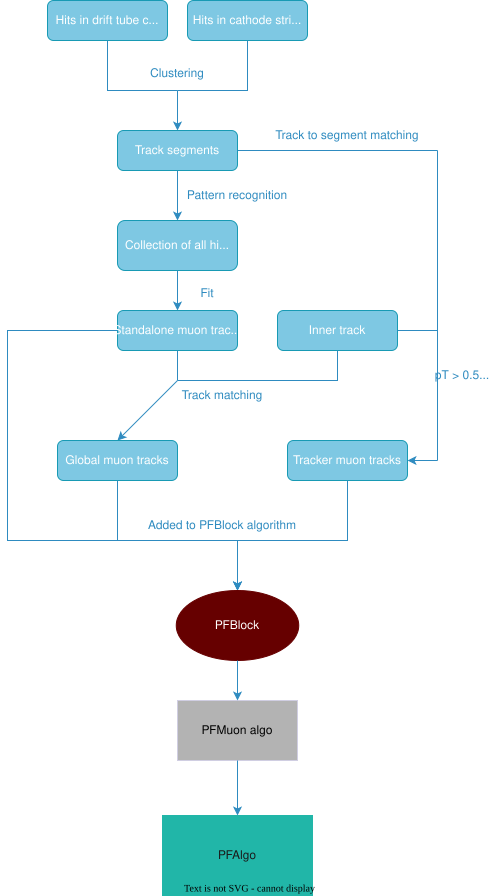

Core Particle Flow algorithm
PRELIMINARY (COMMENTS WELCOME)
Overview of the core PF algorithm
PFAlgo.cc - The core of Particle Flow reconstruction.
TO DO / WORK IN PROGRESS
Explain both the physics logic and the code organization of PFALgo
In each PF block the identification and reconstruction sequence proceeds as so:
- Muon candidates are identified and reconstructed and the corresponding PF elements are removed from the PF block.
- Electron identification and reconstruction with the aim of collecting the energy of all bremsstrahlung photons. Energetic and isolated photons, both converted and unconverted, are also identified here. Corresponding tracks and ECAL or preshower clusters are removed from further consideration.
- The remaining elements in the PF block are then subject to a cross-identification of charged hadrons, neutral hadrons, and photons, arising from parton fragmentation, hadronization, and decays in jets.
- Nuclear interactions coming from hadrons create secondary particles. These hadrons are identified and reconstructed.
- When the global event description becomes available, meaning when all blocks have been processed and all particles identified, the reconstructed event is revisited by a post-processing step.
So in conclusion particles are dealt with in this order: muons, electrons, hadrons, photons, nuclear interactions. When one of them is processed, the corresponding tracks-clusters-links are removed from further consideration.
One can think like this - LINKS-BLOCKS-PARTICLES.
Code
TO DO
Test PFAlgo::PFAlgo
PFAlgo::PFAlgo(double nSigmaECAL,
double nSigmaHCAL,
double nSigmaHFEM,
double nSigmaHFHAD,
std::vector<double> resolHF_square,
PFEnergyCalibration& calibration,
PFEnergyCalibrationHF& thepfEnergyCalibrationHF,
const edm::ParameterSet& pset)
: pfCandidates_(new PFCandidateCollection),
nSigmaECAL_(nSigmaECAL),
nSigmaHCAL_(nSigmaHCAL),
nSigmaHFEM_(nSigmaHFEM),
nSigmaHFHAD_(nSigmaHFHAD),
resolHF_square_(resolHF_square),
calibration_(calibration),
thepfEnergyCalibrationHF_(thepfEnergyCalibrationHF),
connector_() {
const edm::ParameterSet pfMuonAlgoParams = pset.getParameter<edm::ParameterSet>("PFMuonAlgoParameters");
bool postMuonCleaning = pset.getParameter<bool>("postMuonCleaning");
pfmu_ = std::make_unique<PFMuonAlgo>(pfMuonAlgoParams, postMuonCleaning);
// HF resolution parameters
assert(resolHF_square_.size() == 3); // make sure that stochastic, constant, noise (i.e. three) terms are specified.
// Muon parameters
muonHCAL_ = pset.getParameter<std::vector<double>>("muon_HCAL");
muonECAL_ = pset.getParameter<std::vector<double>>("muon_ECAL");
muonHO_ = pset.getParameter<std::vector<double>>("muon_HO");
assert(muonHCAL_.size() == 2 && muonECAL_.size() == 2 && muonHO_.size() == 2);
nSigmaTRACK_ = pset.getParameter<double>("nsigma_TRACK");
ptError_ = pset.getParameter<double>("pt_Error");
factors45_ = pset.getParameter<std::vector<double>>("factors_45");
assert(factors45_.size() == 2);
// Bad Hcal Track Parameters
goodTrackDeadHcal_ptErrRel_ = pset.getParameter<double>("goodTrackDeadHcal_ptErrRel");
goodTrackDeadHcal_chi2n_ = pset.getParameter<double>("goodTrackDeadHcal_chi2n");
goodTrackDeadHcal_layers_ = pset.getParameter<uint32_t>("goodTrackDeadHcal_layers");
goodTrackDeadHcal_validFr_ = pset.getParameter<double>("goodTrackDeadHcal_validFr");
goodTrackDeadHcal_dxy_ = pset.getParameter<double>("goodTrackDeadHcal_dxy");
goodPixelTrackDeadHcal_minEta_ = pset.getParameter<double>("goodPixelTrackDeadHcal_minEta");
goodPixelTrackDeadHcal_maxPt_ = pset.getParameter<double>("goodPixelTrackDeadHcal_maxPt");
goodPixelTrackDeadHcal_ptErrRel_ = pset.getParameter<double>("goodPixelTrackDeadHcal_ptErrRel");
goodPixelTrackDeadHcal_chi2n_ = pset.getParameter<double>("goodPixelTrackDeadHcal_chi2n");
goodPixelTrackDeadHcal_maxLost3Hit_ = pset.getParameter<int32_t>("goodPixelTrackDeadHcal_maxLost3Hit");
goodPixelTrackDeadHcal_maxLost4Hit_ = pset.getParameter<int32_t>("goodPixelTrackDeadHcal_maxLost4Hit");
goodPixelTrackDeadHcal_dxy_ = pset.getParameter<double>("goodPixelTrackDeadHcal_dxy");
goodPixelTrackDeadHcal_dz_ = pset.getParameter<double>("goodPixelTrackDeadHcal_dz");
}
Identification and reconstruction of PF candidates
This section is based on "Particle-flow reconstruction and global event description with the CMS detector" by the CMS collaboration released in 2017.
All particles reconstructed by the PF algorithm are called PF candidates. The sections that follow describe the identification and reconstruction of the different types of PF candidates, which are also used to build taus, jets, and determine the missing transverse energy (MET).
Muons

Since muons are electrically charged particles, they leave tracks in the inner tracking system of CMS. They have little or no interactions with both the ECAL and HCAL, but they do interact with the CMS muon system, consisting of drift tube (DT) chambers, cathode strip chambers (CSC), and resistive plate chambers (RPC).
The muon system grants a high efficiency for muon identification over the full detector acceptance. A high purity is achieved, due to the ECAL and HCAL absorbing the other particles except neutrinos. The momentum of muons is precisely measured by the inner tracker.
The final collection of muon physics objects comprises of 3 types:
- Standalone muon
Hits within each DT or CSC detector are clustered to form track segments. These track segments are used as seeds for the pattern recognition in the muon system, which aims to gather all DT, CSC, RPC hits along the muon trajectory. The result of the final fitting is called a standalone muon track. - Global muon
Each standalone-muon track is matched to a track in the inner tracker (inner track), if the parameters of the corresponding tracks propagated onto a common surface are compatible. The hits from the two tracks are combined and fit to form a global muon track. - Tracker muon
Inner tracks with \(p_T>0.5\) GeV and total momentum \(p>2.5\) GeV are extrapolated to the muon spectrometer. If at least 1 track segment matches the extrapolated track, the inner track passes as a tracker muon track. The track to segment matching is done in a local coordinate system \((x,y)\) that is defined in a plane transverse to the beam axis, where \(x\) is the better measured coordinate. The track and segment are matched if the absolute value of the difference between their positions in the x coordinate \(|\Delta x|<3\) cm or if the ratio of this distance to its uncertainty (pull) is smaller than 4.
WORK IN PROGRESS
The identification of muons in the PF algorithm goes by a set of selections based on the global and tracker muon properties.
- Isolated global muons are selected by considering additional inner tracks and calorimeter energy deposits with a distance deltaR to the muon direction in the eta,phi plane smaller than 0.3 The sum of the pT of the tracks and of the ET of the deposits is required not to exceed 10% of the muon pT. This isolation criteria is enough to reject hadrons that would be misidentified as muons. No further selection is applied to these candidates.
- More strict identification criteria is needed for muons inside jets. The PF algorithm will tend to create additional spurious/fake neutral particles from calorimeter deposits in the case of charged hadrons being misidentified as muons. (because of punch-through). Unidentified muons will be considered to be charged hadrons, and will absorb the energy deposits of nearby neutral particles.
For nonisolated global muons, the tight-muon selection is applied. It is required also that at least 3 matching track segments are found in the muon detectors, or that the calorimeter deposits associated with the track are compatible with the muon hypothesis. This selection removes most of the high pT hadrons misidentified as muons because of punch through, as well as accidental associations of tracker and standalone muon tracks. -
Muons failing tigh-muon selection because of:
- Poorly reconstructed inner track. For example hit confusion with other nearby tracks. These are salvaged if the standalone muon track fit is of high quality and associated with a large nr of hits in the detectors (23/32 DT, 15/24 CSC).
- Poor global fit. If a high quality fit is obtained with at least 13 hits in the tracker, the muon is selected, if the associated calorimeter clusters are compatible with the muon hypothesis.
-
Momentum of the muon is chosen to be that of the inner track if its pT < 200 GeV. Above this value, momentum is chosen according to the smallest Chi squared probability from the different track fits: tracker only, tracker and 1st muon detector plane, global, global without the muon detector planes featuring a high occupancy.
- The PF elements making up these identified muons are masked against further processing in the corresponding PF block, which means are not used as building elements for other particles. At this point muon identification and reconstruction is not complete yet! Charged hadron candidates are checked for compatibility of the measurements of their momenta in the tracker and energies in calorimeters. If the track momenta is significally higher than the calibrated sum of the linked calorimeter clusters, the muon identification criteria is revisited with looser selections on the fit quality and on the hit or segment associations. Basically everything is done with looser selection criteria.
Electrons
TO DO
Electron reconstruction is based on the information from both the inner tracker and the calorimeters. Electrons often emit bremsstrahlung photons and photons often convert to electron/positron pairs, which in turn emit bremsstrahlung photons again etc, due to the large amount of material in the tracker. Because of this the basic properties and technical issues to be solved for the tracking and the energy deposition patterns of electrons and photons are similar - isolated photon reconstruction is done at the same time as electron reconstruction. In a given PF block, an electron candidate is seeded from a GSF track, provided that the corresponding ECAL cluster is not linked to 3 or more additional tracks. A photon candidate is seeded from an ECAL supercluster with ET>10GeV that isn’t linked to a GSF track, since photons don't leave tracks.
ECAL-based electron candidates and photon candidates: The sum of the energies measured in the HCAL cells with a distance to the supercluster position smaller than 0.15 in the eta,phi plane must not exceed 10% of the supercluster energy. All ECAL clusters in the PF block linked either to the supercluster or to one of the GSF track tangents have to be associated with the candidate, in order to ensure an optimal energy containment. Tracks linked to ECAL clusters are associated in turn if the track momentum and energy of the HCAL cluster linked to the track are compatible with the electron hypothesis. Tracks and ECAL clusters belonging to identified photon conversions linked to the GSF track tangents are also associated.
Energy corrections have to be applied. The total energy of the ECAL clusters is corrected for the energy missed in the association process with analytical functions of E and eta (I think this is basically due to the brem and conversion processes). The corrections can be as large as 25% at abs eta = 1.5 where the tracker thickness is largest, and at low pT. The corrected energy is assigned to photons and the photon direction is taken to be that of the supercluster. The final energy assignment for electrons is obtained from a combination of the corrected ECAl energy with the momentum of the GSF track and the electron direction is set to be that of the GSF track. So basically ECAL energy gets corrected, the energy is assigned to photons (brem photons) and the electron energy is assigned from the corrected ECAL energy (electron clusters plus the brem photons) and the GSF momentum.
Additional identification criteria is applied to electron candidates - up to 14 variables, including:
- The amount of energy radiated off the GSF track
- The distance between the GSF track extrapolation to the ECAL entrance and the position of the ECAL seeding cluster
- The ratio between the energies gathered in HCAL and ECAL by the track-cluster association process
- The KF and GSF track chi squared and nr of hits
These 14 variables are combined in BDTs trained separately in the ECAL barrel and endcaps acceptance and for isolated and nonisolated electrons.
Photon candidates are kept if they are isolated from other tracks and calorimeter clusters in the event, and if the ECAL cell energy distribution and the ratio between the HCAL and ECAL energies are compatible with those expected from a photon shower. Long story short - Photon candidates are expected to be isolated from other tracks and calorimeter clusters, they also have to satisfy energy conditions in the calorimeters fitting for photon showers. The PF selection for isolated photons is looser than that of requirements applied to analysis level isolated photons.
Like usual all tracks and clusters in the PF block used to reconstruct electrons and photons are masked against further processing. Tracks identified as originating from photon conversion but not used in the reconstruction process are masked as well, as they are usually poorly measured and likely to be misreconstructed tracks. The distinction between electrons and photons in the PF global event description can be different from a selection optimized for a specialized analysis. To combat this, the complete history of the electron and photon reconstruction is tracked and saved, to allow a different event interpretation to be made without running the whole PF algorithm again.
Photons
TO DO
Charged hadrons
TO DO
Neutral hadrons
TO DO